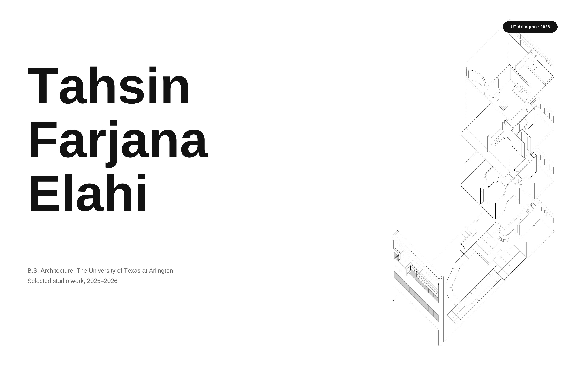
TAHSIN FARJANA ELAHI.
B.S. Architecture, The University of Texas at Arlington
Four projects — a carved greenhouse reading room in Dallas, an analytical reading of Le Corbusier’s Villa Cook, a kinetic writing retreat built on tension, and a five-acre resort in Bangladesh drawn and modeled during a summer internship.
Index — four projects
01 Inhabiting the Cut → 02 Villa Cook → 03 Kinetic Writing Retreat → 04 Kushiara Resorts →01 · ARCH 3505 · Design Studio V · 2026
INHABITING
THE CUT
the greenhouse reading room
The heavy masonry envelope of the former Spaghetti Warehouse confronts the organic topography of Dallas’s West End Park. Rather than maintaining a closed industrial container, a continuous curvilinear carve slices through the facade, second floor, and roof plane, breaking the structural grid. This operation reveals the building’s heavy-timber post-and-beam system under direct zenithal daylight. Within the double-height threshold, a temporary greenhouse pavilion and an indoor-outdoor reading café occupy the carved void, integrating curved bench seating and boundary bookshelves to establish a luminous public retreat.
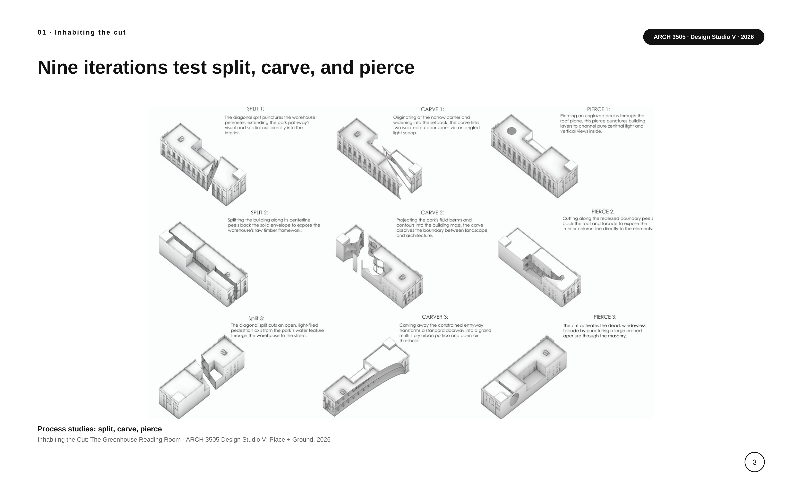
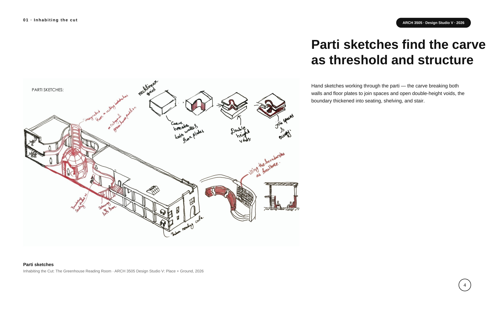
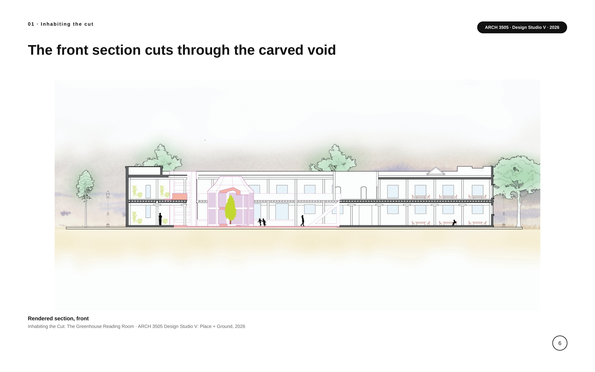
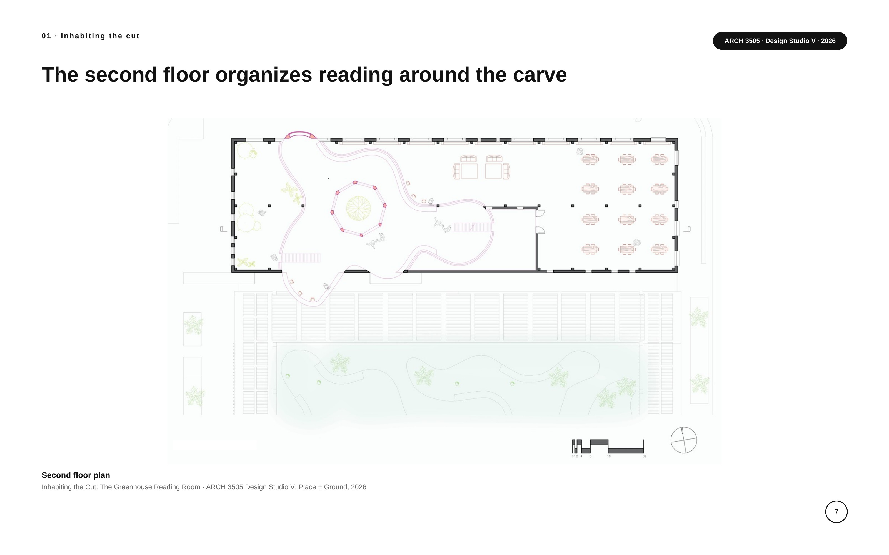
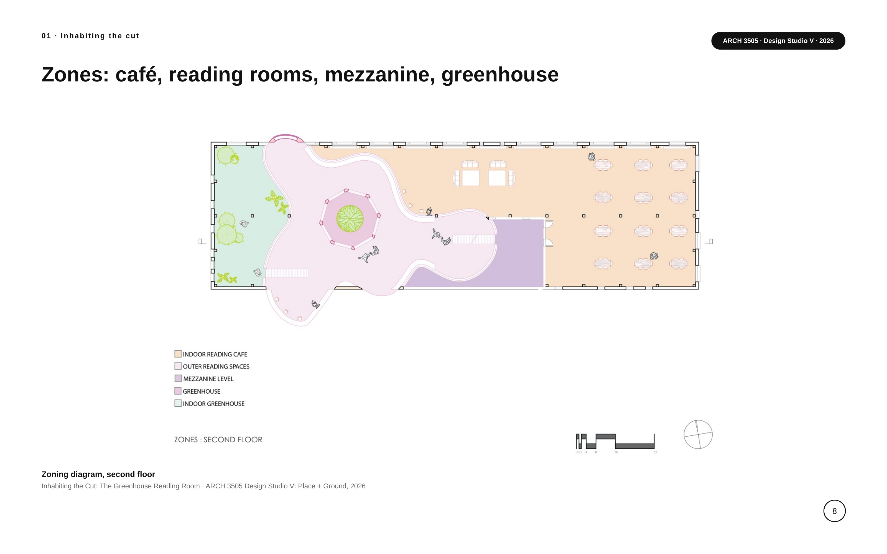
02 · Base plan analysis · 2026
VILLA
COOK
reading a plan through analysis
An analytical study of Le Corbusier’s Villa Cook. Beginning with the base plan, I broke the villa down into a set of diagrams — free plan, grid, circulation, structure, and proportion — to understand how the plan is organized. Section studies compare the villa’s double and single volumes, and the site plan records its position within the grounds.
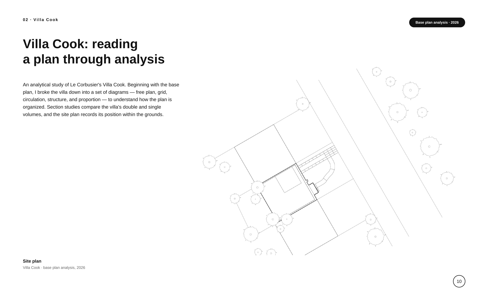
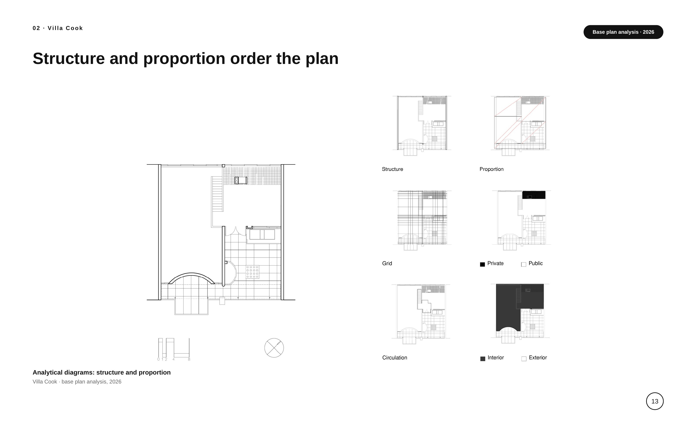
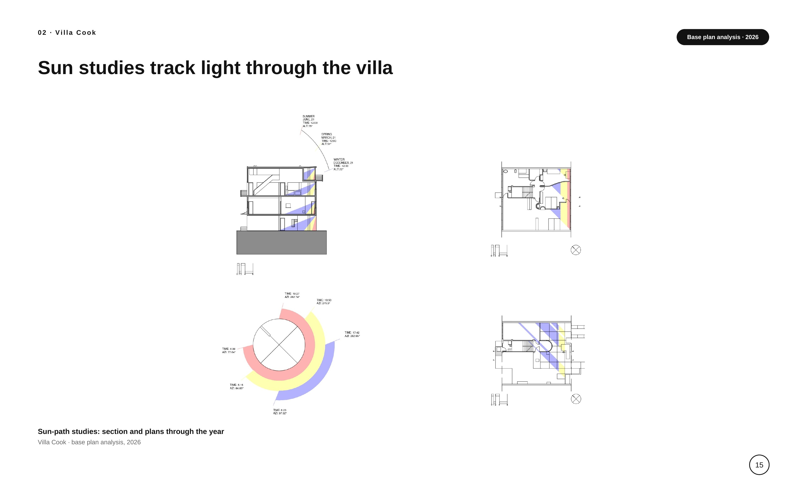
03 · Studio project
KINETIC
WRITING
RETREAT
the observed and the observer
Built from a kinetics prompt, this writing retreat borrows the spatial hierarchy of The Hunger Games to organize its program around a single tension: the observed versus the observer. Two entries act as a conceptual gate — the ‘audience’ arrives by stair while the ‘tributes’ descend a steep 25-degree threshold, a deliberate physical friction, into the Room of Written Memories: heavy, grounded, dimly lit. Both paths converge on the central living space, the arena itself, where a skylight drops a harsh, direct beam onto the tribute’s path — total exposure, no escape. Lifted off massive thick-wall conditions on either side, the reading and writing room hovers above as a free plan: the Gamemakers’ viewing deck, looking permanently down into the living space. The surveillance is architectural rather than literal — felt in the tension between heavy poché and exposed, brightly lit volumes.
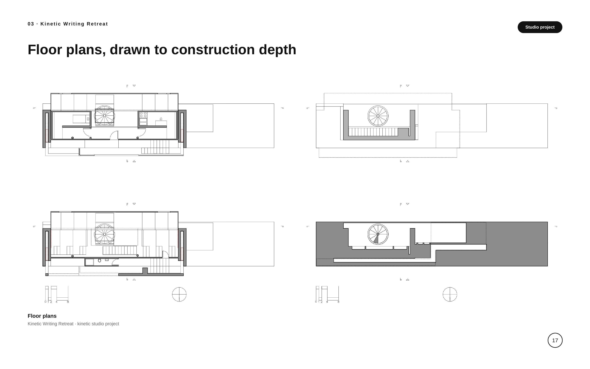
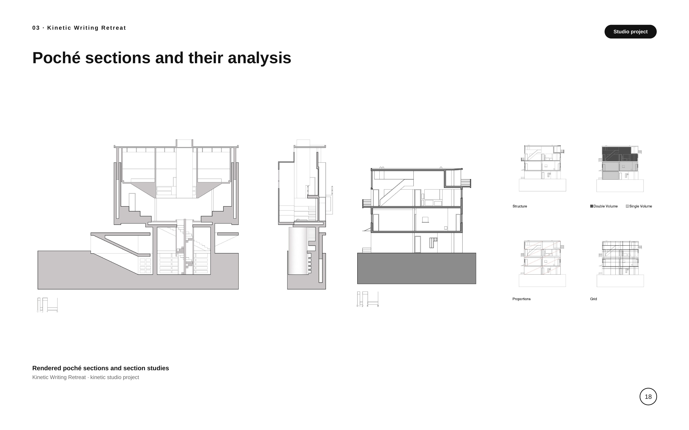
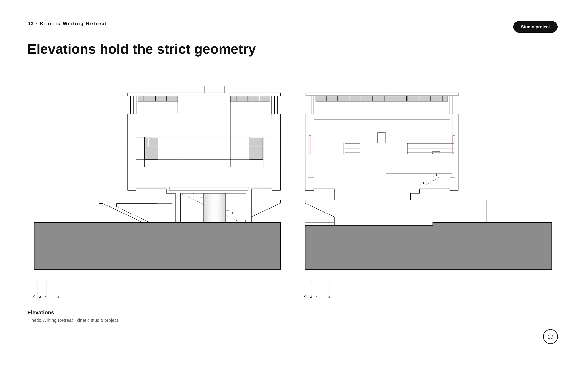
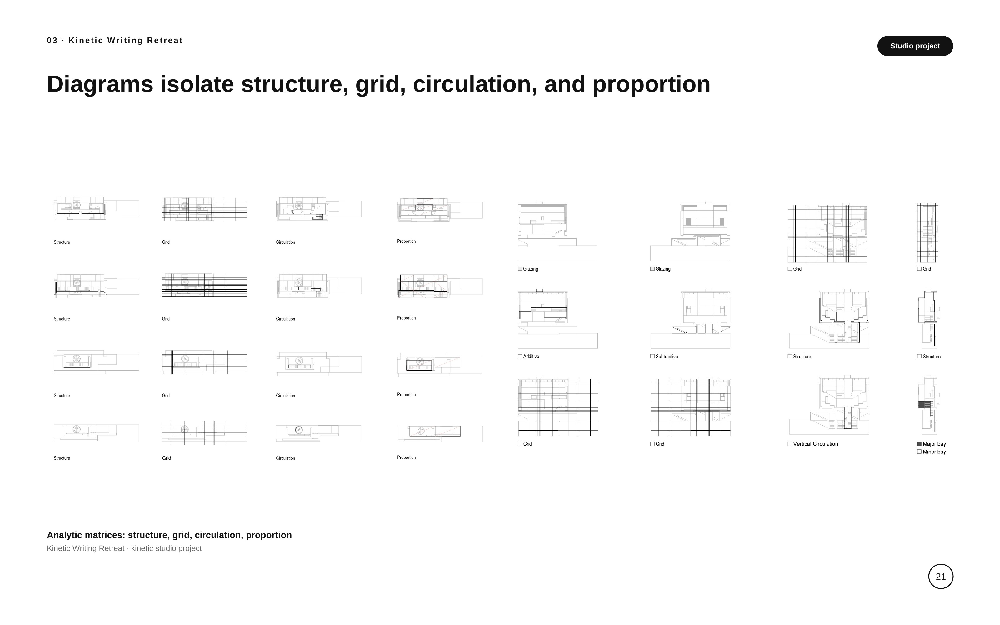
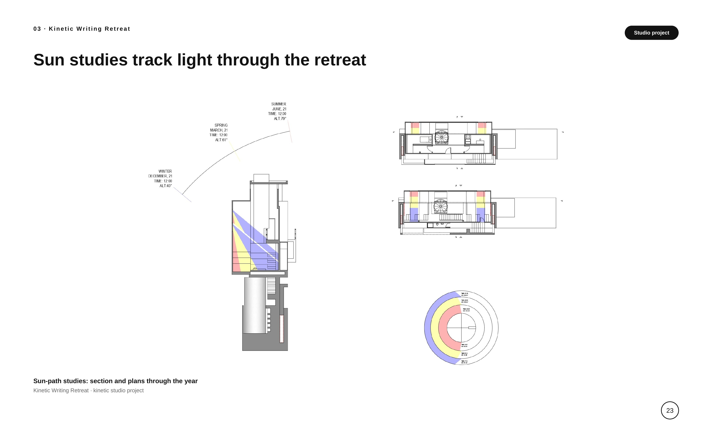
04 · Form 3A Architects · Internship · 2026
KUSHIARA
RESORTS
a five-acre hospitality project
During my summer internship at Form 3A Architects in Dhaka, I worked on Kushiara Resorts, a 5.14-acre resort in Sylhet Sadar, Bangladesh — client Humayun Ahmed, status ongoing. I built the project’s SketchUp model and produced the CAD drawing set, including the restaurant block. Reception, dining, villas, and amenity pavilions are organized around a central waterbody; deep pitched roofs and timber screens respond to the local climate, and guest movement runs along covered walkways over the water.
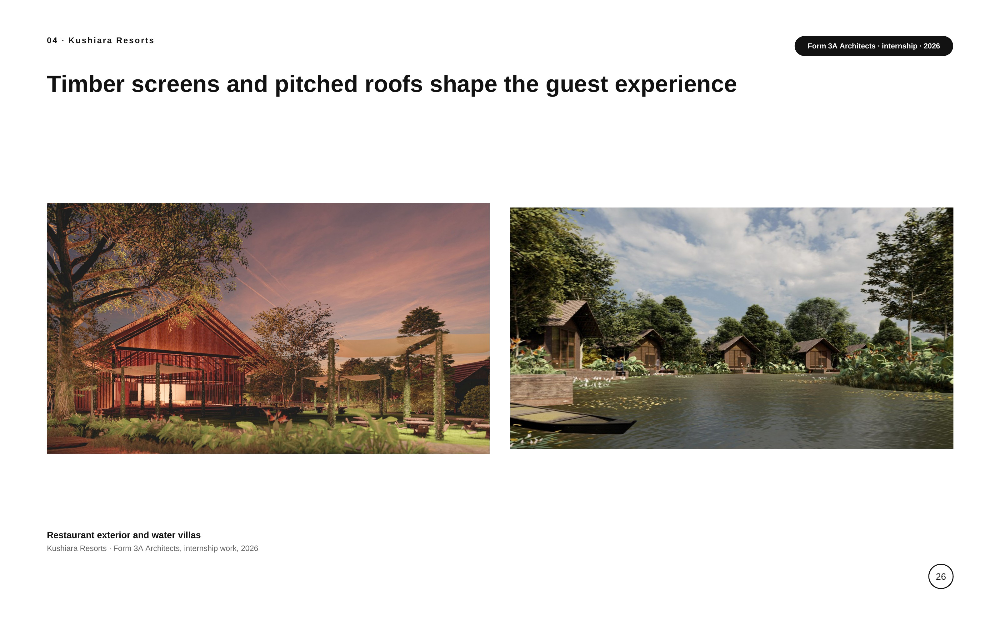
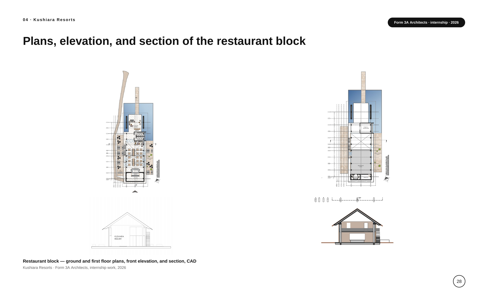
About
TAHSIN
FARJANA ELAHI
Education & experience
B.S. Architecture, The University of Texas at Arlington, 2024–2028.
Architecture intern, Form 3A Architects, Dhaka, Bangladesh — summer 2026.
Software
- Rhino
- AutoCAD
- SketchUp
- Blender
- Adobe Creative Suite